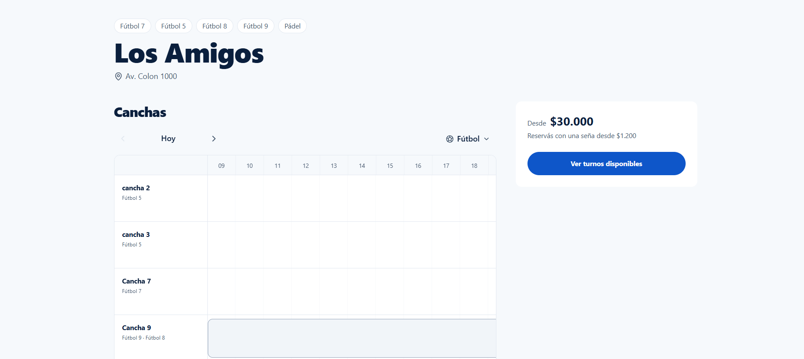
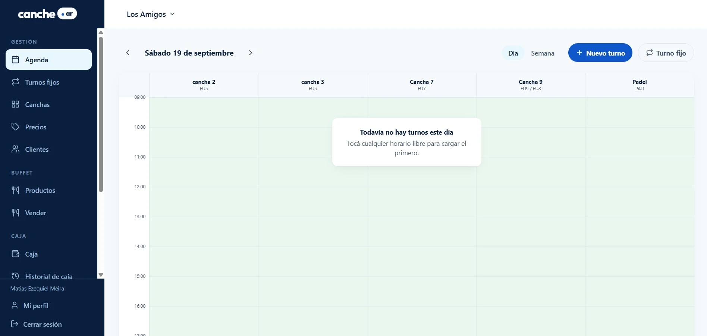

Desarrollador Backend con un fuerte enfoque en el ecosistema Java/SpringBoot y experiencia en implementaciones con Python/Django. Mi formación en la Universidad Nacional de General Sarmiento me ha permitido desarrollar una mentalidad analítica para la resolución de problemas complejos.
Me especializo en transformar necesidades de negocio en sistemas técnicos escalables, priorizando siempre la integridad de los datos, la seguridad de la información y el rendimiento del servidor.
Trayectoria Académica
2026 (Completado)
Técnico Universitario en Informática
UNGS - Buenos Aires, Argentina
En Curso
Licenciatura en Sistemas
Univ. Nac. General Sarmiento
Proyectos de Ingeniería
Canche.ar
Plataforma de reservas y gestión de canchas deportivas para complejos en Argentina. Los jugadores buscan y reservan online; el complejo maneja agenda, turnos fijos, caja, buffet, gastos, empleados y reportes en el mismo sistema. El problema de fondo: un mismo espacio físico sirve para distintos deportes, y reservar una cancha de fútbol 7 no puede bloquear capacidad que sigue libre para fútbol 5.
Búsqueda de canchas por deporte, ubicación y horario

Calendario de disponibilidad por cancha y deporte

Panel de gestión del complejo (agenda, precios, caja)
Separé la cancha física de lo que consume cada reserva: una cancha de fútbol 7 se arma con dos de fútbol 5, y la disponibilidad se calcula sobre ese modelo para no bloquear capacidad que en realidad está libre.
Doble reserva prevenida en dos capas: lock pesimista sobre todas las canchas del pool afectado, tomado en orden de id para evitar deadlocks, y un constraint EXCLUDE USING gist de PostgreSQL como red a nivel base de datos. Tests de concurrencia contra un Postgres real con Testcontainers.
Seña con pre-reserva que retiene el turno 10 minutos: un job libera las vencidas y la disponibilidad ya las trata como libres antes de que corra. La seña depende del plan del complejo.
Turnos fijos semanales modelados como regla más ocurrencias: la serie se renueva o se cancela como unidad y pasa por las mismas validaciones que una reserva puntual.
Modo Caja para el mostrador: la PC se empareja con un código de un solo uso y cada empleado entra con su PIN, con permisos por acción. Caja con cierre y arqueo, alimentada por cobros, ventas del buffet y gastos, y reportes de facturación y ocupación.
Autorización centralizada y cubierta con tests HTTP con JWT real; un test por reflexión falla si un endpoint nuevo no declara @PreAuthorize. Idempotency-Key obligatorio en reservas y ventas, y rate limiting en login y registro.
Registro en 2 pasos con verificación de mail (link o código de 6 dígitos) que preserva el contexto de la reserva en curso.
Backend: 14 módulos de dominio, 28 migraciones Flyway y más de 1.700 tests, con CI en GitHub Actions. Frontend: 43 rutas en Next.js 16 y 253 tests en Vitest.
Proyecto académico grupal · UNGS
Gestión de Producción de Congelados
Sistema de gestión de producción para una empresa de alimentos congelados (caso de estudio de la cursada): controla el flujo desde el ingreso de materia prima hasta el despacho del producto terminado.
Ver decisiones técnicas
Fichaje de empleados por reconocimiento facial: compara el vector facial capturado contra los vectores guardados calculando distancia euclídea, con un umbral de 0.6, en vez de pedir usuario y contraseña para marcar entrada o salida.
Planificador diario que compara stock disponible contra demanda de ventas: si una orden de producción se atrasa por falta de materia prima, recalcula su fecha automáticamente y marca las ventas afectadas para revisión.
Reserva de lotes de stock (producto terminado y materia prima) con criterio FIFO por fecha de vencimiento, para no dejar lotes por vencer sin usar mientras se consumen lotes más nuevos.
Trabajo grupal de cuatro personas. Mi aporte se concentró en los módulos de compras, reportes, despachos y materias primas.
Proyecto personal
API de Gestión de Liga Amateur
Backend para gestionar equipos y jugadores de una liga de fútbol amateur: alta de equipos, alta de jugadores por equipo y autenticación de usuarios.
Ver decisiones técnicas
Contraseñas hasheadas con BCrypt, y el secreto de firma HMAC del JWT se valida al arrancar la aplicación (falla si tiene menos de 32 caracteres) en vez de descubrirlo recién en producción.
Regla de negocio de máximo 22 jugadores por equipo, validada en la capa de servicio antes de persistir.
Stack Tecnológico
Backend
Java 21 / Spring Boot 3Canche.ar, API de Gestión de Liga Amateur
Python / DjangoGestión de Producción de Congelados
Seguridad
Spring Security + JWTCanche.ar (revocación de JWT por versión de token), API de Gestión de Liga Amateur (BCrypt)
Persistencia
PostgreSQLCanche.ar, Gestión de Producción, API de Gestión de Liga Amateur
FlywayCanche.ar
Infraestructura
Docker (multi-stage)Canche.ar
GitHub ActionsCanche.ar
SentryCanche.ar
Contacto
¿Buscas sumar un desarrollador backend a tu equipo? Mi bandeja de entrada siempre está abierta. Ya sea que tengas una pregunta o simplemente quieras saludar, ¡haré lo posible por responderte!